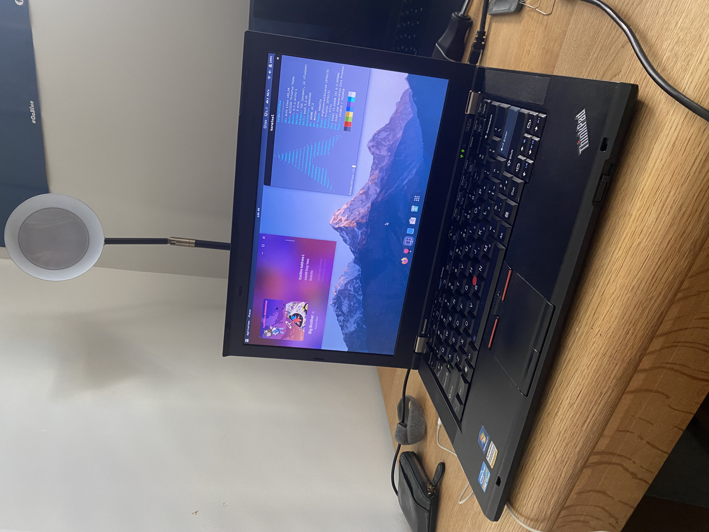
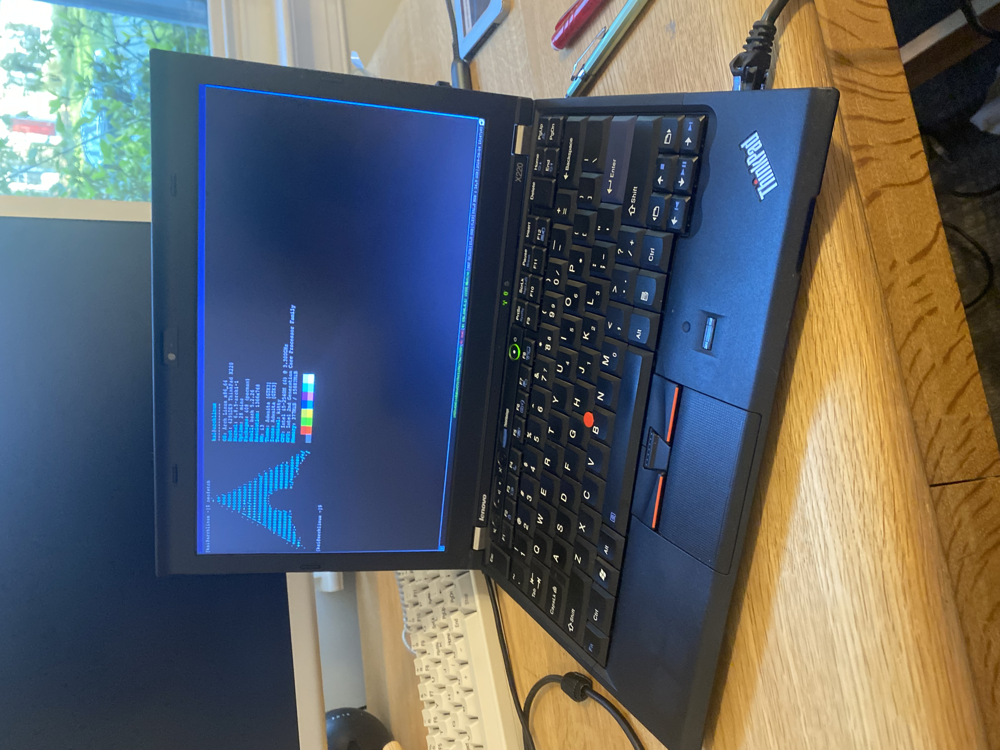
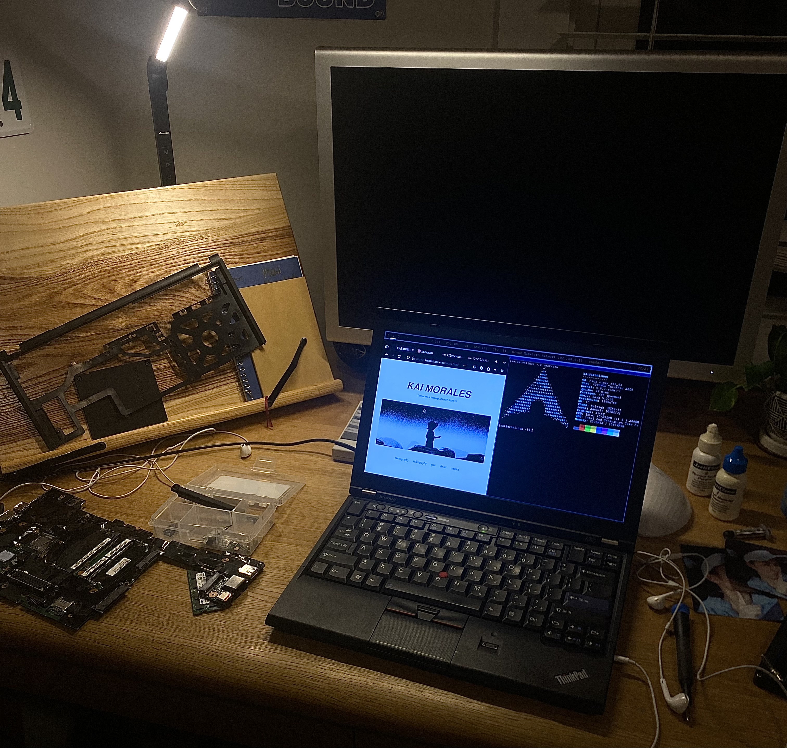
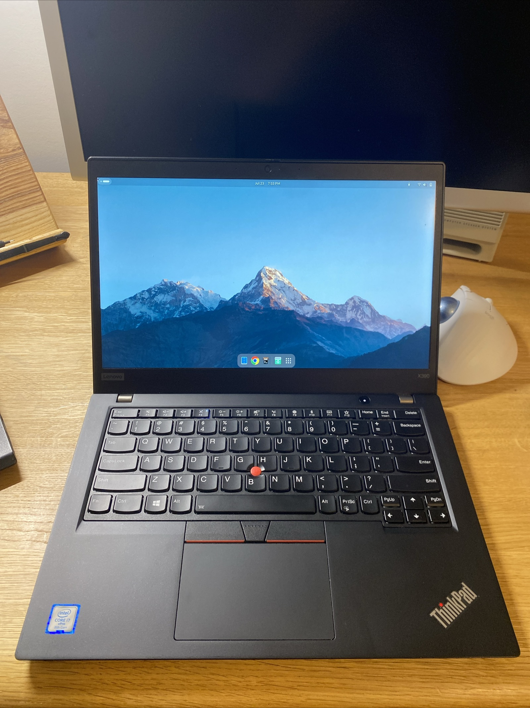

My first ThinkPad was the T420s, which I got for just $65 on eBay. Released in 2011 as part of Lenovo's renowned T-series, this model quickly became a favorite in the tech community for its durability and performance. It featured an Intel Core i5 or i7, a 14-inch display, and an option for discrete NVIDIA graphics. I ran Arch Linux with GNOME on mine, which was perfect for learning Linux. The T420s is known for being one of the most reliable workhorses, and using it gave me a solid foundation in both Linux and ThinkPad hardware. The laptop had great build quality, and despite its age, it performed well for basic tasks. It was the first step in my journey into the world of ThinkPads and open-source operating systems.
After the T420s, I moved on to the X220, another beloved ThinkPad model. The X220, launched in 2011, is often regarded as one of the best compact laptops Lenovo ever made. It had a 2nd-gen Intel i5, a 12.5-inch display, and a great keyboard—the last in the classic ThinkPad style before Lenovo switched to chiclet keys. I picked mine up for $50, but it had a faulty motherboard, so I bought a second one and replaced it myself. This hands-on repair solidified my love for ThinkPads, as they’re incredibly easy to open up and tinker with.
Once fixed, I upgraded it to 16GB of RAM and added a 2TB SSD. Running Arch Linux with the i3 window manager was a game-changer for me. Navigating entirely via the keyboard made me feel much more efficient, and the i3 setup kept me focused. The X220 wasn’t the fastest machine, but for web browsing, coding, and basic tasks, it was perfect. I loved this laptop and even sold it for $250 after restoring it to near-mint condition. Despite its age, the X220 remains one of my favorite laptops due to its portability, performance, and upgradability.
 Next, I picked up a ThinkPad X390 for about $180. Released in 2019, the X390 is a much more modern machine, featuring an 8th-gen Intel i7 processor and 16GB of RAM. This model was part of Lenovo’s shift toward sleeker, lighter ultrabooks, making it a great choice for portability without sacrificing too much power. I loved using it—the performance was fantastic, and the battery life was solid—but alongside my MacBook, it felt a bit redundant. While it was capable of handling everything I threw at it, from web browsing to productivity tasks, I didn’t need two laptops with similar functionality. I ended up selling it for the same price I bought it for, which worked out well.
Now, I’m in the process of trying to revive the X220 shell that served as a donor for the motherboard replacement. Even though I already had my perfect X220, I couldn’t let the shell go to waste. The X220’s reputation as one of the best ThinkPads ever made, thanks to its repairability and legendary keyboard, is what motivates me to keep this project alive. I’m working on getting it up and running again, and I’m excited about the prospect of bringing a beloved machine back to life. Stay Tuned!